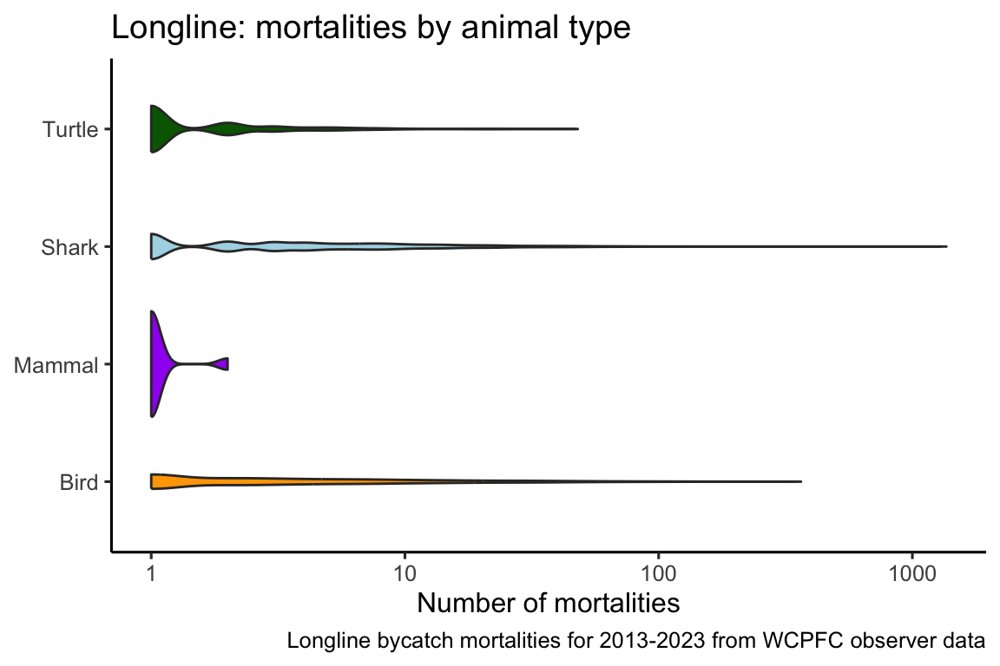
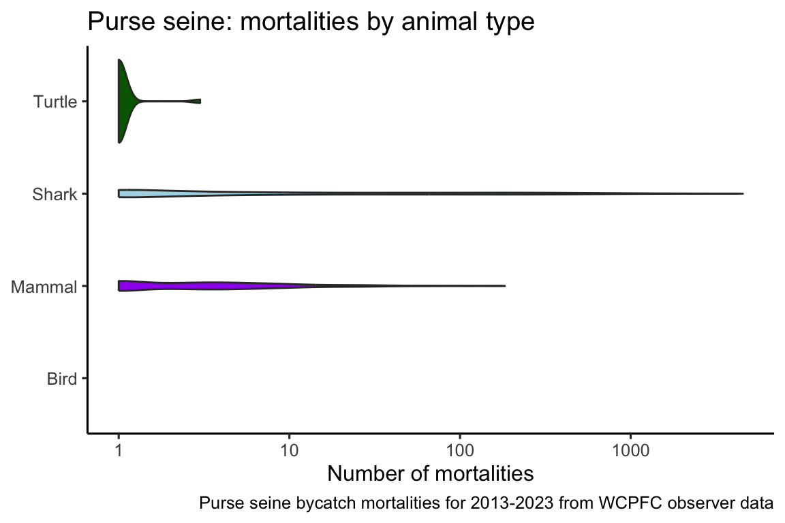
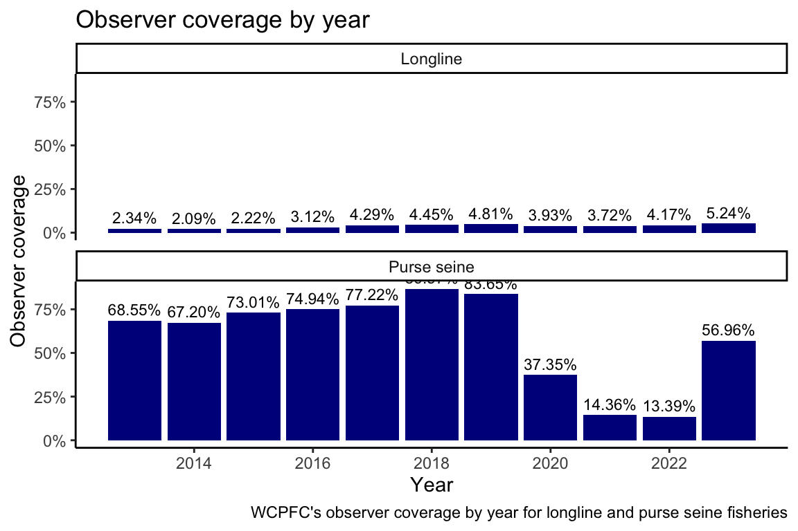
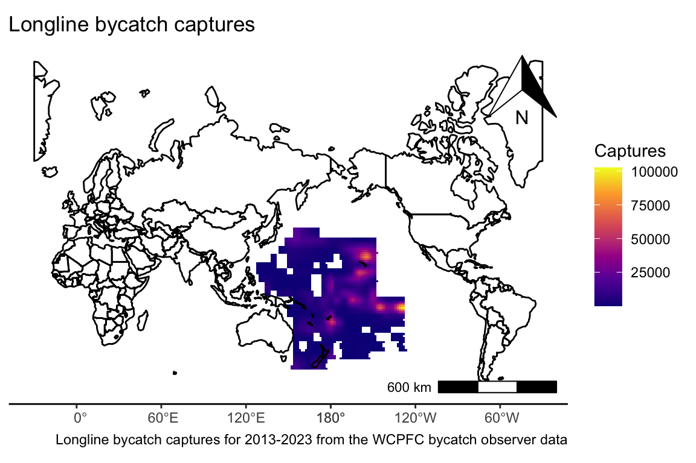

Final report
An exploration of WCPFC bycatch data from 2013-2023
Introduction
WCPFC (Western and Central Pacific Fisheries Commission) is the Regional Fisheries Management Organization (RFMO) for the western Pacific.
WCPFC collected and made available bycatch data collected by observers on longline and purse seine fishing vessels for the years 2013-2023.
This report contains a preliminary exploration of that data.
Objectives
- Clean the data.
- Visualize bycatch mortalities by animal type for the 10 year time period.
- Visualize observer coverage for the longline and purse seine fleets.
- Create a map of bycatch captures for the 10 year time period.
Data sources
The data is from the WCPFC’s public domain bycatch observer data for longline and purse seine vessels within the WCPFC’s jurisdiction and is in a single Excel spreadsheet with multiple tabs. Unfortunately WCPFC removed the link I originally used to download the data but I am citing to an Excel file that may contain the same dataset (Western and Central Pacific Fisheries Commission 2024).
Data processing
Cleaning the data
- The Excel spreadsheet was imported into R using the readxl package (Wickham and Bryan 2025) and cleaned using the dplyr package (Wickham et al. 2025) to reshape the data and the janitor package (Firke 2024) to clean column names.
- Each tab in the Excel sheet had to be imported individually and then joined using a left join. Tabs related to longline were combined and tabs related to purse seine were combined. Longline and purse seine were also joined with a tab from the original Excel spreadsheet that contains information about the types of animals observed.
- Latitude and longitude columns were converted to a single geometry column using the sf package (Pebesma and Bivand 2023; Pebesma 2018).
Visualizing the data
Bycatch captures by animal type were plotted with a violin plot using the ggplot2 package (Wickham 2016).
Observer coverage by year was plotted with a bar chart also using the ggplot2 package (Wickham 2016).
The map of longline bycatch captures over the 10 years of the dataset was created by rasterizing the longline data using the terra package (Hijmans 2025) and projecting it to center the Pacific, again using the terra package (Hijmans 2025). The rasterized longline data was projected over a map of the Earth (excluding Antarctica) from the rnaturalearth package (Massicotte and South 2025) which was also reprojected using the sf package (Pebesma and Bivand 2023; Pebesma 2018) to center the Pacific. The map was made using the ggspatial package (Dunnington 2025) and tidyterra package (Hernangómez 2023).
Main findings
1. Longline bycatch mortalities
Longline bycatch mortalities were greatest for sharks, followed by birds, turtles, and marine mammals/
2. Purse seine bycatch mortalities
Purse seine bycatch mortalities were greatest for sharks, followed by marine mammmals, and turtles. No bycatch mortalities were reported for birds.

In the purse seine fishery the greatest bycatch mortalities were of sharks followed by marine mammals and then turtles. No bird mortalities were reported.
3. Observer coverage by year
Longline
Observer coverage for the longline fleet has increased from its lowest value over the 10 year dataset of 2.09% in 2014 to its highest value of 5.24% in 2018.
Purse seine
Observer coverage for the purse seine fleet is much higher than for the longline fleet, the highest percent coverage was 86.57% in 2018. Coverage dropped to 14.36% in 2021 and 13.39% in 2022, likely due to the global pandemic, but increased to 56.96% in 2023.

4. Map of bycatch captures

Bycatch captures were more concentrated in the north and eastern parts of the spatial area.
References
Dunnington, Dewey. 2025. “Ggspatial: Spatial Data Framework for Ggplot2.” https://paleolimbot.github.io/ggspatial/.
Firke, Sam. 2024. “Janitor: Simple Tools for Examining and Cleaning Dirty Data.” https://github.com/sfirke/janitor.
Hernangómez, Diego. 2023. “Using the tidyverse with terra Objects: The tidyterra Package.” Journal of Open Source Software 8 (91): 5751. https://doi.org/10.21105/joss.05751.
Hijmans, Robert J. 2025. “Terra: Spatial Data Analysis.” https://github.com/rspatial/terra.
Massicotte, Philippe, and Andy South. 2025. “Rnaturalearth: World Map Data from Natural Earth.” https://docs.ropensci.org/rnaturalearth/.
Pebesma, Edzer. 2018. “Simple Features for R: Standardized Support for Spatial Vector Data.” The R Journal 10 (1): 439–46. https://doi.org/10.32614/RJ-2018-009.
Pebesma, Edzer, and Roger Bivand. 2023. Spatial Data Science: With applications in R. Chapman and Hall/CRC. https://doi.org/10.1201/9780429459016.
Western and Central Pacific Fisheries Commission. 2024. “Bycatch Data Excel File (BDEP).” https://www.wcpfc.int/sites/default/files/2025-10/BDEP%20Tables_11-2024.xlsx.
Wickham, Hadley. 2016. Ggplot2: Elegant Graphics for Data Analysis. Springer-Verlag New York. https://ggplot2.tidyverse.org.
Wickham, Hadley, and Jennifer Bryan. 2025. “Readxl: Read Excel Files.” https://readxl.tidyverse.org.
Wickham, Hadley, Romain François, Lionel Henry, Kirill Müller, and Davis Vaughan. 2025. “Dplyr: A Grammar of Data Manipulation.” https://dplyr.tidyverse.org.